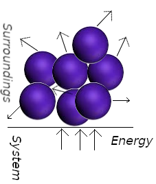
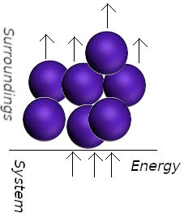

Heat
When two bodies at different temperatures are placed in contact, they eventually reach thermal equilibrium at a common intermediate temperature. We say there has been a transfer of energy as heat from the hotter body to the colder one. Let bodies 1 and 2 have masses m1 and m2 and initial temperatures T1 and T2 , with T2 > T1; let Tf be the final equilibrium temperature. Provided the two bodies are isolated from the rest of the universe and no phase change or chemical reaction occurs, one experimentally observes the following equation to be satisfied for all values of T1 and T2:
m2 c2 (T2 − Tf) = m1 c1 (Tf − T1) := q
where c1 and c2 are constants (evaluated experimentally) that depend on the composition of bodies 1 and 2. We call c1 the specific heat capacity (or specific heat) of body 1. We define q, as the heat tranferred from body 2 to body 1. The SI unit of energy and work and heat, the joule, is named in Joule’s honor.
For the above expression, the proportionality constant is represented by the letter c and is called the specific heat (or specific heat capacity):
q = m ⋅ c ⋅ ΔT
The specific heat is an intensive characteristic of the material composing the system. Materials with a low specific heat, like many metals, need little heat for a relatively large change in temperature.
The older unit of energy and heat and work, the calorie, is defined as the amount of heat needed to raise the temperature of exactly 1 mL of water by 1°C from 15°C to 16°C. The relationship between the calorie and the joule is
1 calorie = 4.184 joules
The molecular interpretation of heat and work
When bodies at different temperatures are placed in contact, collisions between molecules of the two bodies produce a net transfer of energy to the colder body from the hotter body, whose molecules have a greater average kinetic energy than those in the colder body. Heat is the transfer of energy that makes use of random motion (thermal motion). When a system heats the surroundings, molecules of the system stimulate the thermal motion of the mocules in the surroundings.
Conversely, work is the transfer of energy that makes used of organized motion in the surroundings. When a weight is raised or lowered, its atoms move in a ordered way (up or down).
In a spring the atoms move in a ordered way when is wound; the electrons in an electric current move in the same direction. When a system does work it causes atoms in its surroundings to move in an orderly way.
In the adiabatico compression of a gas, work is done on the system as the atoms of the weight upon the piston accelerate the gas molecules to an higher average speed. The collision among gas molecules quickly randomize their directions, resulting in thermal motion. We say taht the orderly descent of the atoms of the piston do work on the system even though they are stimulating thermal motion. The fact that a falling weight may stimulate thermal motion in the system is irrelevant to the distinction between heat and work: Heat is work done at the molecular level. We identify work as energy transfer making use of the organized motion of atoms in the surroundings, and heat is identified as energy transfer making use of thermal motion in the surroundings. Heat and work are defined only in terms of processes. Before and after the process of energy transfer between system and surroundings, heat and work do not exist, that is they are not state functions. For an infinitesimal change in a system, the infinitesimal changes in the work, heat, and internal energy are represented as δw, δq, and dU. Note thy slight difference in notation (we used δ for w and q instead of d). When dw and dq are integrated, the result is the absolute amount of work w and heat q for the process. But when dU is integrated, the result is not the absolute U but the change in U, ΔU, for the process. Mathematically, this is written as
∫ δw = w
∫ δq = q
∫ dU = ΔU
The differentials dw and dq are called inexact differentials, meaning that their integrated values w and q are path-dependent. By contrast, dU is an exact differential, meaning that its integrated value ΔU is path-independent. All changes in state functions are exact differentials. Another way to illustrate the previous equations is to note that but
ΔU = Uf − Ui
but w ≠ wf − wi and q = qf − qi
Neither heat not work can exists as stored energyit hence it has no sense to write wf and wi (the same for q).